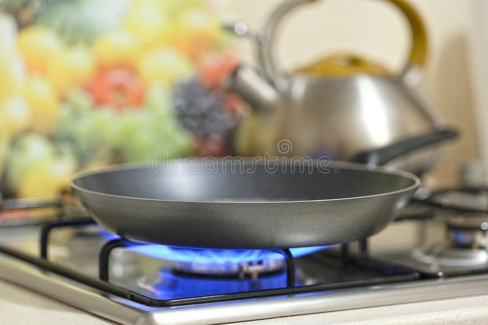
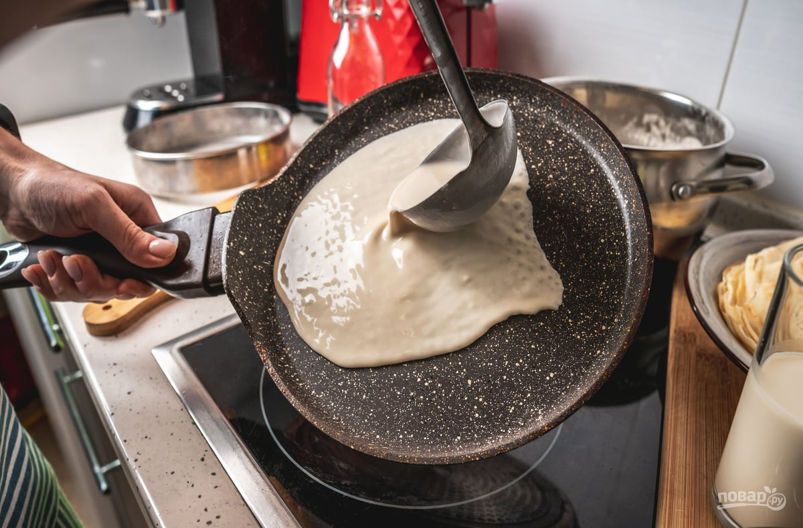
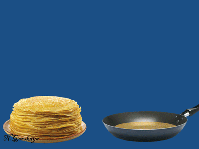

Как сделать блинчики

- нужно мука (Примерно с толстым стаканом)
- нужно молоко (Тоже примерно с толстым стаканом)
- нужно 1 яйцо
- Соль-сахар(не обязательно)
Нужно очень хорошо перемишать так чтобы небыло комочков и еще тесто не должно быть совсем жидким и не совсем густым.
Отлично! Тесто Готово
Теперь хорошо нагреваем сковородку и в этом процессе вы должны добавить чуть-чуть масло и промазать его по сковородке.

После того как разогрели сковородку,
Вы должны вылить тесто на сковородку как на картинке

И теперь вы должны подождать на глаз.
Теперь вы должны подкинуть блин так чтобы он перевернулся! я советую перед тем как готовить блины тренероватся ведь это очень сложно (если вы уже профисионал в этом то можно не тренероватся) .
Если блин не до конца перевернулся нужно быстро достать лопатку или вилку и подправить!!!
Конечно можно первернуть лопаткой или другими способами но этот способ хороший.
Дальше кладем блин из сковородки в тарелку, тоесть блин должен соскользить в тарелку, и потом из осташсего теста делаем также как и 1 блин.
Готово!
Блинчики готовы!!

Если не понятно то посмотри видео
Что такое блинчики???
Блины — блюдо русской кухни, выпекаемое из жидкого теста на сковороде.
Русские блины выпекаются из пшеничного дрожжевого теста. Подаются горячими с растопленным сливочным маслом или сметаной. Также могут быть поданы с икрой, солёной (копчёной) рыбой и любым
другим гарниром по желанию. Блины из пресного теста в кулинарии называются блинчиками. В них может быть завёрнута различная начинка: творог, мясо, рис, грибы, варенье, яблоки.
В осетинской и чечено-ингушской кухнях блины готовят из смеси пшеничной и кукурузной муки.
В Западной Европе и Средней Азии блины готовят из пресного теста. Блинчики фр. crêpe пекут во Франции, Австрии и США.
Блины разных народов: мордовские пачат, болгарские палачинки, венгеро-закарпатские палачинта, польские налесники, украино-белорусские налистники, монгольские гамбир, индийские доса, эфиопские ынджера.
Факты о блинчиках
1.Лучше всего не покупать муку "мука для блинчиков"
2.Чтобы были вкуснее блинчики, можно добавить сыр,колбасу,сметана,сгущенку,варенье и тд
3.Если вам лень готовить блинчики то можно купить во вкусвилле они очень вкусные:)